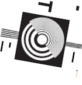
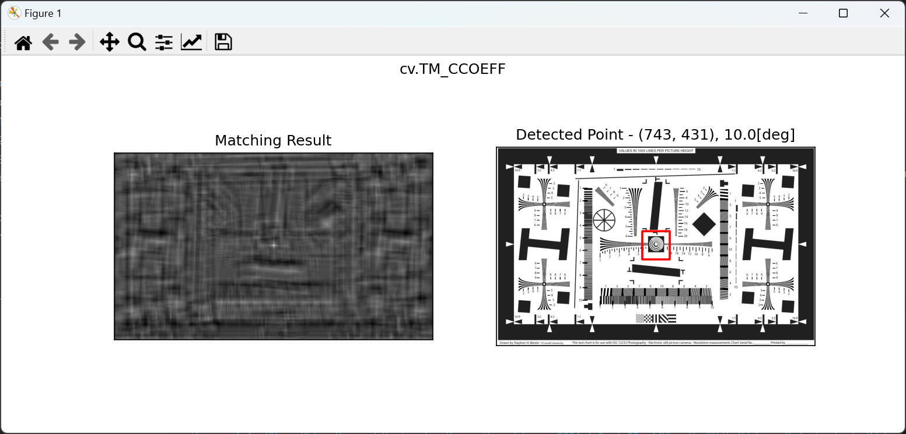

1. 解像度チャートを使ったテンプレートマッチング
[概要]
以下で表記の「図１： 探索対象の画像」内から「図２： 探索画像」の場所をテンプレートマッチングという画像認識アルゴリズムを使って探索します。
図１： 探索対象の画像

図２： 探索画像

[環境]
| 言語 : | Python, | 3.10.7 |
| OS : | Windows11 home, | 23H2 |
[実行結果]
見つけた場所を赤枠で表記しています。
図： 実行結果例

[プログラム]
[プログラムソース "template_matching.py"]
import cv2 as cv
import numpy as np
import copy
from matplotlib import pyplot as plt
def template_matching(img, template, method, search_area_top_left = None, search_area_bottom_right = None):
"""
テンプレートマッチング処理
Args:
img (array): 評価対象画像
template (array): テンプレート画像
method (int): 評価方式
(cv.TM_CCOEFF, cv.TM_CCOEFF_NORMED, cv.TM_CCORR, cv.TM_CCORR_NORMED, cv.TM_SQDIFF, cv.TM_SQDIFF_NORMED)
search_area_top_left:
探索範囲 左上座標 (ex: (0, 0))
無指定時は (0, 0)
search_area_bottom_right:
探索範囲 右下座標 (ex: (1920, 1080))
無指定時は img 全範囲
Returns:
top_left: 最も一致した左上座標
rotation_result: 最も一致した回転角度 [degree]
res: matchTemplate 処理結果
"""
val = None
res_result = None
rotation_result = None
rotation_range = 10.0
rotation_step = 0.5
img_h, img_w = img.shape[:2]
template_h, template_w = template.shape[:2]
if search_area_top_left is None:
search_area_top_left = (0, 0)
if search_area_bottom_right is None:
search_area_bottom_right = (img_w - template_w + 1, img_h - template_h + 1)
assert search_area_top_left[0] >= 0, "Invalid argument"
assert search_area_top_left[1] >= 0, "Invalid argument"
assert search_area_top_left[0] <= img_w - template_w + 1, "Invalid argument"
assert search_area_top_left[1] <= img_h - template_h + 1, "Invalid argument"
assert search_area_bottom_right[0] >= 0, "Invalid argument"
assert search_area_bottom_right[1] >= 0, "Invalid argument"
assert search_area_bottom_right[0] <= img_w - template_w + 1, "Invalid argument"
assert search_area_bottom_right[1] <= img_h - template_h + 1, "Invalid argument"
assert search_area_top_left[0] < search_area_bottom_right[0], "Invalid argument"
assert search_area_top_left[1] < search_area_bottom_right[1], "Invalid argument"
# 探索範囲を制限するマスク画像を作成
template_mask = np.full((img_h - template_h + 1, img_w - template_w + 1), 0, dtype=np.uint8)
cv.rectangle(template_mask, search_area_top_left, search_area_bottom_right, 255, -1)
ret, template_mask = cv.threshold(template_mask, 128, 255, cv.THRESH_BINARY)
for rotation_degree in np.arange(-rotation_range, rotation_range + rotation_step, rotation_step).tolist():
# テンプレート画像を少しずつ回転してテンプレートマッチング処理を行います。
# 最もスコアの良いものを結果として採用します。
affine = cv.getRotationMatrix2D((template_w/2.0, template_h/2.0), rotation_degree, 1.0)
#template_rotated = cv.warpAffine(template, affine, (w, h), flags=cv.INTER_LINEAR)
#template_rotated = cv.warpAffine(template, affine, (w, h), flags=cv.INTER_CUBIC)
template_rotated = cv.warpAffine(template, affine, (template_w, template_h), flags=cv.INTER_LANCZOS4)
# テンプレートマッチング処理を行う
res = cv.matchTemplate(img, template_rotated, method)
min_val, max_val, min_loc, max_loc = cv.minMaxLoc(res, template_mask)
# If the method is TM_SQDIFF or TM_SQDIFF_NORMED, take minimum
if method in [cv.TM_SQDIFF, cv.TM_SQDIFF_NORMED]:
if val != None and min_val < val:
rotation_result = rotation_degree
val = min_val
top_left = min_loc
res_result = copy.deepcopy(res)
elif val is None:
rotation_result = rotation_degree
val = min_val
top_left = min_loc
res_result = copy.deepcopy(res)
else:
if val != None and max_val > val:
rotation_result = rotation_degree
val = max_val
top_left = max_loc
res_result = copy.deepcopy(res)
elif val is None:
rotation_result = rotation_degree
val = max_val
top_left = max_loc
res_result = copy.deepcopy(res)
return top_left, rotation_result, res_result
# 処理対象画像 を読み込み
img_org = cv.imread('ISO_12233-reschart.bmp', cv.IMREAD_GRAYSCALE)
assert img_org is not None, "file could not be read, check with os.path.exists()"
# テンプレート画像 を読み込み
#template = cv.imread('template_img_1.bmp', cv.IMREAD_GRAYSCALE)
template = cv.imread('template_img_1_rot10.bmp', cv.IMREAD_GRAYSCALE)
#template = cv.imread('template_img_2.bmp', cv.IMREAD_GRAYSCALE)
assert template is not None, "file could not be read, check with os.path.exists()"
w, h = template.shape[::-1]
# All the 6 methods for comparison in a list
methods = ['cv.TM_CCOEFF', 'cv.TM_CCOEFF_NORMED', 'cv.TM_CCORR_NORMED', 'cv.TM_SQDIFF', 'cv.TM_SQDIFF_NORMED']
for meth in methods:
img = img_org.copy()
method = eval(meth)
# テンプレートマッチング処理による画像探索
top_left, rotation, res = template_matching(img, template, method) # 全範囲探索
#top_left, rotation, res = template_matching(img, template, method, (160, 190), (200, 240)) # 探索領域を指定
# 画像探索結果を表示
print(meth, " : ", top_left, ", ", rotation)
bottom_right = (top_left[0] + w, top_left[1] + h)
img_color = cv.cvtColor(img, cv.COLOR_GRAY2RGB)
cv.rectangle(img_color, top_left, bottom_right, color=(255, 0, 0), thickness=10)
plt.subplot(121),plt.imshow(res, cmap = 'gray')
plt.title('Matching Result'), plt.xticks([]), plt.yticks([])
plt.subplot(122),plt.imshow(img_color, cmap = 'gray')
plt.title(f'Detected Point - {top_left}, {rotation}[deg]'), plt.xticks([]), plt.yticks([])
plt.suptitle(meth)
plt.show()
プログラムの補足説明
- 探索対象の画像、探索画像をグレースケールで読み取りしています。
(ex) cv.imread('ISO_12233-reschart.bmp', cv.IMREAD_GRAYSCALE) - ５つの方式（'cv.TM_CCOEFF', 'cv.TM_CCOEFF_NORMED', 'cv.TM_CCORR_NORMED', 'cv.TM_SQDIFF', 'cv.TM_SQDIFF_NORMED'）を使って順番にテンプレートマッチング処理を行っています。
- 画像回転は ±10[degree] の範囲を 0.5[degree] ステップで探索しています。
- 画像回転のときに使用する画像補間処理アルゴリズムとして cv.INTER_LANCZOS4 を使用しています。低レベルの補間アルゴリズムを使用すると認識性能が低下するようです。